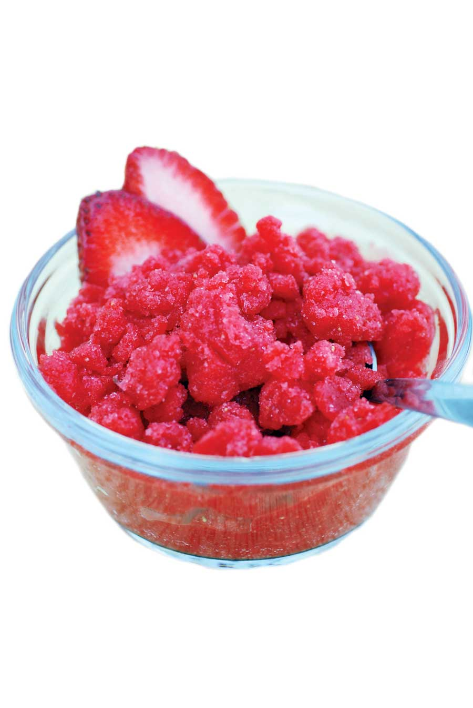

The Italians call this frozen fruit preparation “granita,” but you’ll have more luck pitching it to your kids as strawberry snow cones.
Ingredients:
1 cup hot water
3/4 cup sugar
2 tbsp fresh lemon juice
3 cups sliced strawberries, plus additional berries for garnish
Instructions:
Mix hot water, sugar and lemon juice in a small bowl until sugar dissolves. Blend 3 cups strawberries in processor or blender until smooth. Add sugar syrup and blend until combined. Pour mixture into 9-by-13-inch baking pan. Freeze for about 25 minutes or until icy around edges. Using fork, pull icy portions into middle of pan. Repeat this step every 20 minutes until all the liquid is frozen into flaky, loose crystals. Cover and freeze. When ready to serve, use fork again to scrape crystals into bowls and garnish with berries. Serves about 6.
Check out these fresh seasonal strawberry recipes, too!
|
 ROGER DOIRON This simple strawberry recipe is so cool, it’s cold. |
|
|